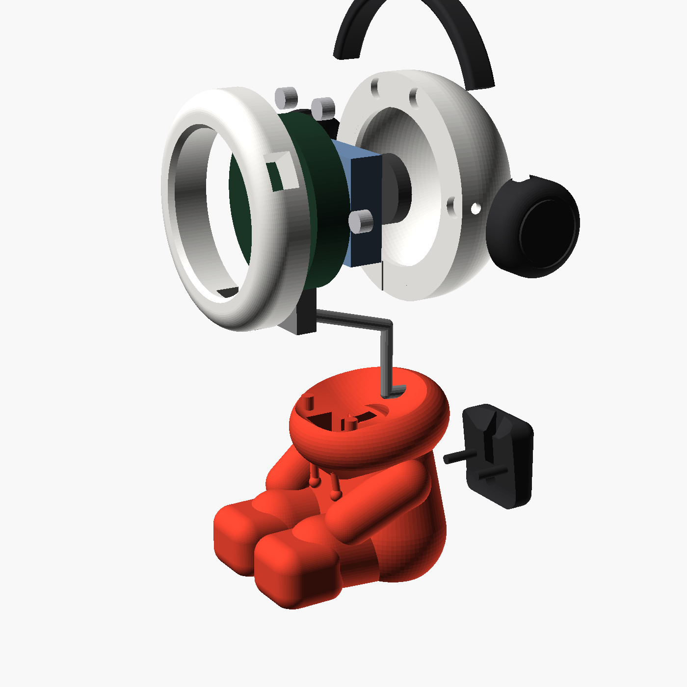
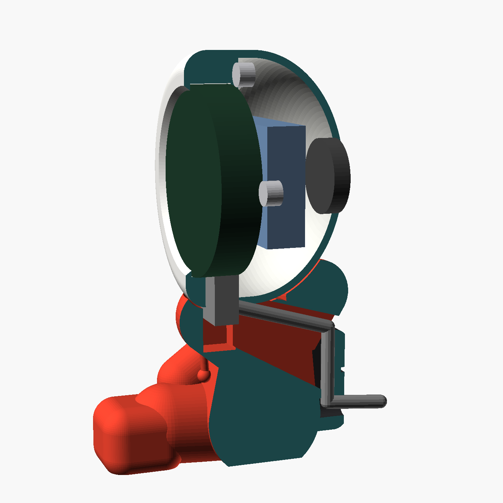
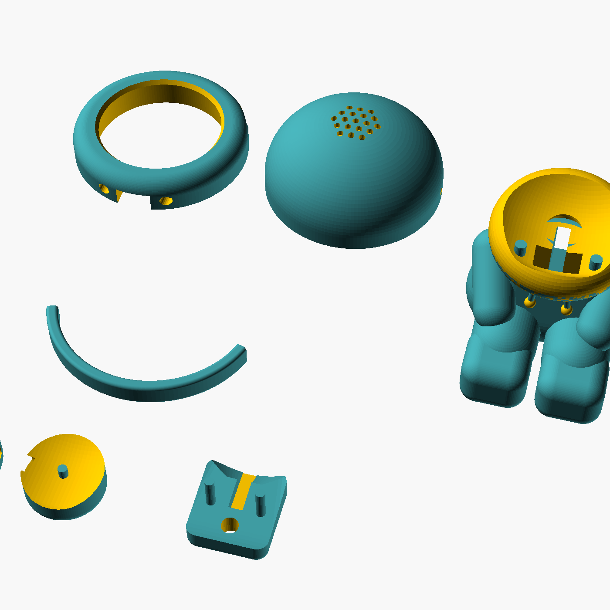

Screws and fasteners
Beat Buddy doesn't use any screws. Each joint is held by magnets, printed pegs, glue or foam tape, so there's nothing to thread into plastic and you can open the head again later.
| Fastener | Size | Qty | Where it goes | How |
|---|---|---|---|---|
| Neodymium disc magnets | 6 × 2 mm pocket Ø6.3 × 2.2 mm | 8 | 4 in the back face of the head front, 4 in the front face of the head back | Magnet + a drop of super glue in each pocket |
| Head pegs (printed on the body) | Ø3.8 mm peg → Ø4.4 mm hole | 2 | Top of the hood collar, into the bottom of the head front | Rests on loose fit, lift the head off any time |
| Ear-cup pegs (printed on the cups) | Ø3.0 mm peg → Ø3.3 mm hole | 2 | Sides of the head back | Push fit add glue only if loose |
| Backpack pegs (printed on the backpack) | Ø3.0 mm peg → Ø3.4 mm hole | 2 | Back of the body | Push fit pull off to remove the cable |
| Super glue (CA, gel type) | Small tube | 1 | Magnets, headphone band into the ear cups | Glue |
| Double-sided foam tape | About 1 mm thick, 10–20 mm wide | 15 cm | Battery, speaker, and a thin strip behind the board if it rattles | Tape |
Battery
A single-cell lithium-polymer pouch battery, the same type as in the Deskimon video. It sits flat behind the screen board inside the head.
What to buy
- Type
- 3.7 V LiPo, 1 cell (1S)
- Capacity
- 1000 mAh (3.7 Wh)
- Size code
- 103040 (10 × 30 × 40 mm)
- Largest that fits
- 10 mm thick × 30 mm × 40 mm
- Plug
- MX1.25 2-pin (1.25 mm pitch)
- Protection
- Must have a built-in protection board (PCM)
- Search for
- 3.7V 1000mAh lipo 103040 MX1.25
- Price
- About C$5–8
Check the polarity before you plug it in
Sellers sometimes wire the plug backwards. A reversed battery can destroy the board's charging chip.
Charging
Through the board's USB-C while Beat Buddy sits on the desk. The board has its own charge chip, so no extra charger is needed.Run time
Roughly 5–8 hours away from the cable, depending on screen brightness and Wi-Fi use. This is an estimate until we measure it.Safety
Don't bend, puncture or squash the battery. Keep the foam tape on its flat side only, and keep it away from the sharp edges of the board.Shopping list
Nothing needs soldering if the battery and speaker come with MX1.25 plugs.
| Part | Qty | Search for | Notes |
|---|---|---|---|
| Waveshare ESP32-S3-Touch-AMOLED-1.75 | 1 | Waveshare ESP32-S3 1.75 AMOLED touch | Standard version, not "-G" (GPS). About C$35–45. |
| LiPo battery | 1 | 3.7V 1000mAh lipo 103040 MX1.25 | See the battery section above |
| Speaker, 8 Ω 1–2 W, Ø20 mm | 1 | 8ohm 2W speaker 20mm MX1.25 | Often included with the board. At most Ø28 mm and 5 mm thick. |
| Magnets, 6 × 2 mm | 8 | 6x2mm neodymium magnet | Usually sold in packs of 20–50 |
| USB-C cable, 90° up/down angle | 1 | USB C 90 degree up down angle cable | The cable must leave the plug from its flat face, not its side |
| Super glue (gel) and foam tape | 1 each | ||
| PLA filament | 3 colours | White about 22 g · Black about 11 g · Red about 62 g |
What goes where
The head opens into two halves. The screen board sits in the front half behind the bezel, the battery and speaker sit in the back half, and the cable runs down through the body into the backpack.


| Component | Location | Held by |
|---|---|---|
| Screen board | Head front, glass facing out, USB-C pointing down | Clamped between the bezel lip and the ring on the head back |
| Battery | Head back, flat against the back of the board, wires towards the board's battery socket | Foam tape |
| Speaker | Head back, against the inside of the grille | Foam tape or a few dots of hot glue on its rim |
| Magnets | 4 pockets on each side of the split between the head halves | Super glue |
| Headphones | Band over the top, cups on the sides of the head back | Glue band into cups, push fit cups onto the head |
| Head | Sits in the hood collar | 2 pegs plus the USB cable |
| Cable | Slot in the collar and down the back, then through the backpack | Held in the slot by the backpack |
| Backpack | Back of the body | 2 pegs |
Wiring
There are only three plugs, and all of them go into sockets already on the board.
Assembly, step by step
Do the test in step 4 before you close the head. It's much easier to fix things while everything is still open.
Clean up the prints 5 min
Peel off any brim and lightly sand the two split faces of the head so they sit flat against each other. Test-fit the board in the head front. It should drop in with almost no force.Glue in the magnets Magnets Glue
- Stack all 8 magnets into one column, then mark the top face of the whole stack with a marker.
- Lay both head halves with their flat split faces pointing up.
- Head front: take magnets off the top of the stack one at a time and press each into a pocket with the marked face up. Put a small drop of super glue in the pocket first.
- Head back: do the same, but with the marked face down.
- Before the glue sets, hold the halves together to check they pull towards each other at all four spots. Let it dry for 10 minutes.
Fit the screen board Clamped
- Peel any protective film off the glass.
- Drop the board into the head front, glass first, so it rests on the bezel lip.
- Turn it until the USB-C port lines up with the rectangular slot at the bottom. The side buttons should then line up with the small slot on the side.
- Don't glue the board. The head back clamps it in place.
Plug in the battery and speaker, then test No tools
- Check the battery polarity first (see the battery section above), then plug it into the battery socket.
- Plug the speaker into the speaker socket.
- Connect USB-C, flash the firmware, and check that the screen, touch and sound all work.
Stick down the battery and speaker Foam tape
- Battery: put a strip of foam tape on one flat side and stick it in the head back, lying flat and centred, close to where the board will sit. Point its wires towards the battery socket.
- Speaker: stick it against the inside of the grille, facing out. Use a ring of foam tape on its rim, or 3 small dots of hot glue on its rim. Don't put glue on the cone.
- Fold any spare wire flat. Nothing should sit between the two halves of the head.
Close the head Magnets
Hold the head back so its headphone holes are at the sides, and let the magnets pull it onto the head front. The seam should close fully all round. If the board rattles, add a thin strip of foam tape to the ring inside the head back where it presses on the board.Fit the headphones Glue Push fit
- Dry-fit first: slide each end of the band into the slot on top of an ear cup.
- Put the headphones on the head, pushing each cup's peg into the hole on the side of the head back.
- Once it sits right, take it off, put a small drop of super glue in each cup slot, and refit. Glue only the band to the cups, never the cups to the head, or you won't be able to open the head again.
Connect the cable Plug in
Plug the 90° USB-C plug into the board from underneath, with the cable pointing backwards. If it points forwards, unplug it, turn it over (USB-C works either way up) and plug it back in.Seat the head on the body 2 pegs
- From behind, press the cable into the slot in the top of the collar. Let it drop down the slot in the back of the body.
- Lower the head into the collar so the plug sits in the pocket and the two pegs go into the holes under the head. It should sit level and not rock.
Clip on the backpack 2 pegs
Lay the cable into the groove inside the backpack and out through the hole at the bottom. Then push the backpack's two pegs into the holes in the body's back. Done!Printing
Every part prints in one colour, with no supports, in the orientation already set in the files.
| File | Colour | Parts |
|---|---|---|
| beat_buddy_WHITE_plate.3mf | White | Head front, head back |
| beat_buddy_BLACK_plate.3mf | Black | Band, 2 ear cups, backpack |
| beat_buddy_RED_plate.3mf | Red | Body |
| beat_buddy_ALL_PARTS.3mf | Any | All 7 parts on one plate |
| Setting | Value |
|---|---|
| Material | PLA, matte looks best |
| Layer height | 0.16 mm head and headphones · 0.2 mm body |
| Walls / infill | 3 walls · 15% gyroid |
| Supports | None. Use tree supports under the arms only if your printer droops on overhangs. |
| Orientation | As in the file. Don't rotate. |

Fit and measuring
The model uses Waveshare's published board size. When your board arrives, measure these four things. If any is off by more than 0.3 mm, send me the numbers and I'll update the model.
| Measure | Model uses | How to measure |
|---|---|---|
| Board diameter | 48.96 mm (pocket 49.36 mm) | Calliper across the widest point of the glass or board |
| Board thickness | 10.4 mm (pocket 10.8 mm) | From the glass face to the tallest part on the back |
| USB-C position | 7.5 mm back from the glass | From the glass face to the middle of the USB-C opening |
| Side buttons | 30° up from the robot's left side | With USB-C at the bottom, where the PWR and BOOT buttons sit around the edge, as a clock position |
Troubleshooting
| Problem | Fix |
|---|---|
| Board is too tight in the head front | Lightly sand the inside of the pocket, or reprint with board_d set 0.2 mm larger |
| Board rattles | A thin strip of foam tape on the ring inside the head back |
| Head halves push apart instead of pulling together | One magnet is the wrong way round. Pull it out, flip it, and re-glue it. |
| Head doesn't close fully | A wire or the battery is caught in the seam, or there's a stringing blob on the split face |
| Ear cups fall off | A drop of glue on the peg. You'll then need to remove the headphones before opening the head. |
| Cable points forward and can't reach the slot | Turn the USB-C plug over |
| Battery doesn't charge | Check it's in the battery socket, not the speaker socket, and that the polarity is right. Then try another USB charger. |
| Screen shows upside down | Rotate the display in the firmware settings. The board must stay with USB-C at the bottom. |